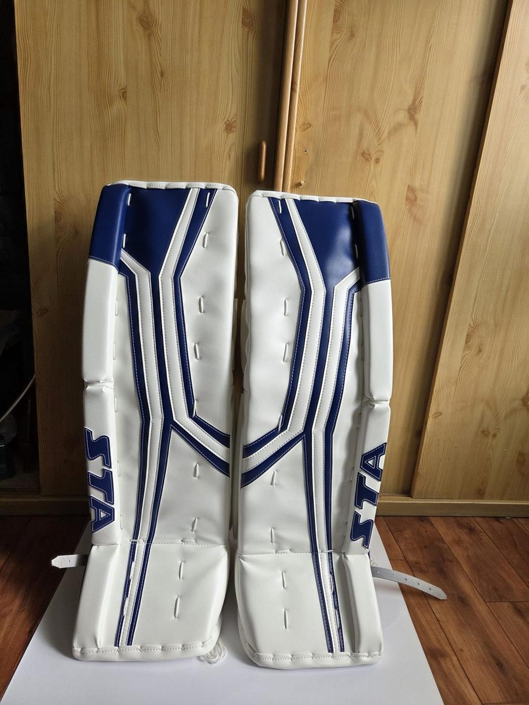
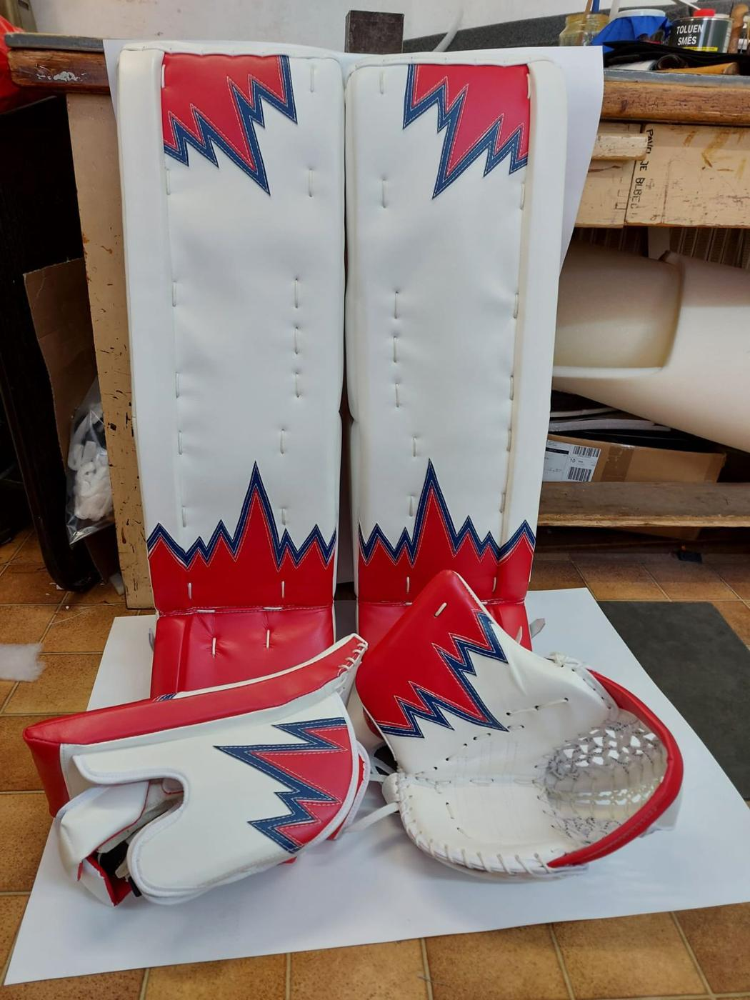

Profesionální
brankářské betony
Ručně šité betony na míru vašemu stylu. Dostaňte ze sebe v brankovišti to nejlepší díky výstroji, která se přizpůsobí vám, ne naopak.

Bleskový skluz (sliding)
Vnitřní hrany vyrábíme z prémiových materiálů s minimálním třením. Vaše přesuny v rozkleku budou rychlejší a plynulejší.
Dokonalá stabilita
Pevný a rozšířený kolenní blok zaručuje, že koleno dopadne vždy přesně tam, kam má, v každém zákroku.
Aktivní odraz puků
Jádro z kvalitního materiálu tlumí nárazy a zajišťuje tvrdé a předvídatelné odrazy puku pryč z nebezpečné zóny.
Extrémně nízká hmotnost
Díky použití moderních materiálů šetříme každý gram bez obětování ochrany nebo odolnosti.
Betony podle velikosti
Každý kus šijeme na míru – přesnou velikost určíme při měření v dílně. Níže najdete ukázky z výroby v jednotlivých velikostech.

Navrhněte si betony svých snů.
- 01
Design a barvy
Kompletní vizuální přizpůsobení vašemu týmu nebo osobnímu stylu.
- 02
Tvrdost a zlomy (flex & breaks)
Specifické nastavení tuhosti jádra betonů pro váš styl chytání.
- 03
Systém upínání
Volba mezi tradičními řemínky, elastickými popruhy nebo hybridním systémem.
- 04
Dokonalá velikost
Přesné měření pro zajištění, aby koleno vždy centrovalo v kolenním bloku.
Betony v galerii


Jste připraveni na nové betony?
Nechte si ušít betony, které vám pomohou chytat lépe a zvýší vaše sebevědomí v každém zákroku.
Přejít na kontaktní formulář